Made 16 Oct 2026, 20:58 AEDT from branch claude/design-book-20261016. Proposals, not approved. Synthetic people and places; property photos are stand-ins (credits at the foot). Desktop-browser renders at phone size, not Luke's phone.
Arrival, 7:31 amThe greeting over the morning; Priya on the card with her call as a tab on its edge.
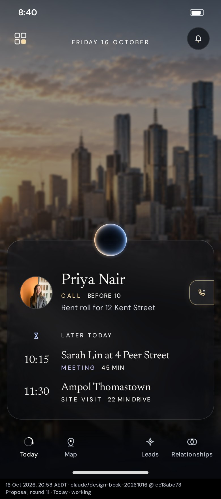
Working, 8:40 amThe greeting steps aside. Priya leads; later today below, each with its time in the lead column.
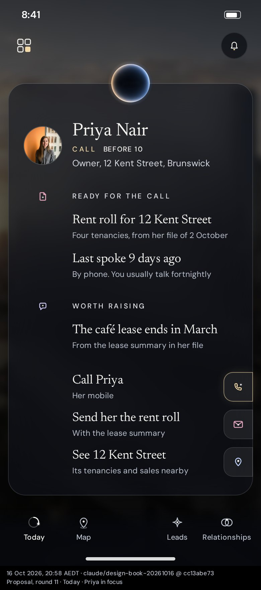
Priya in focusFirst tap: what is ready for the call, what is worth raising, and her three actions as tabs on the edge.
Today, Sarah's meeting
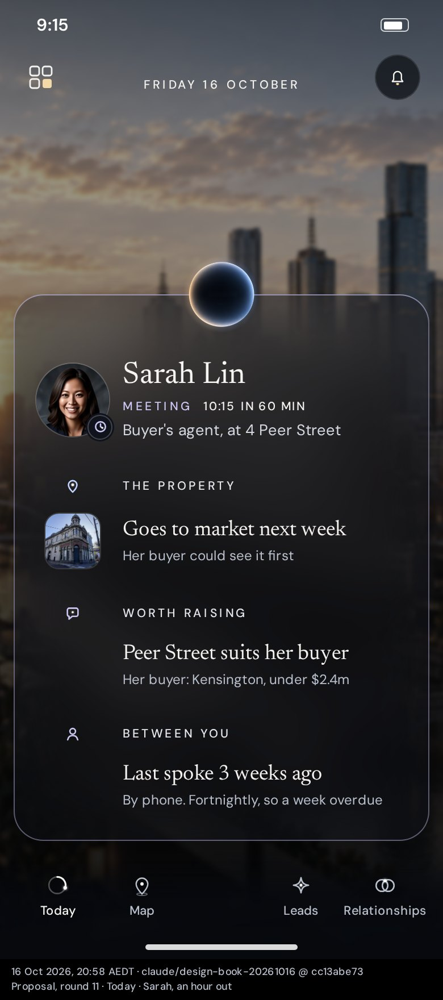
An hour out, 9:15 amHer face leads; the property, what is worth raising and where you are with her, each under its own heading.
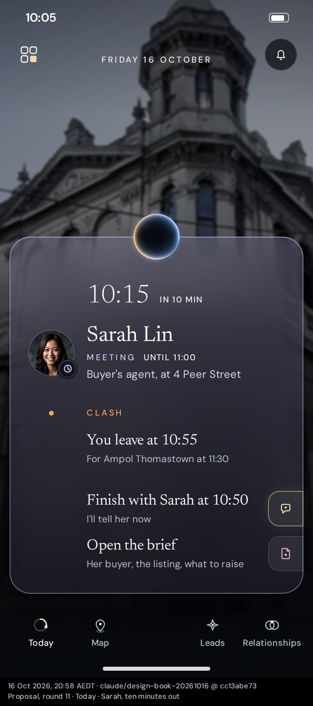
Ten minutes out, 10:05 amThe time comes forward; the clash and its fix; the brief one tap away.
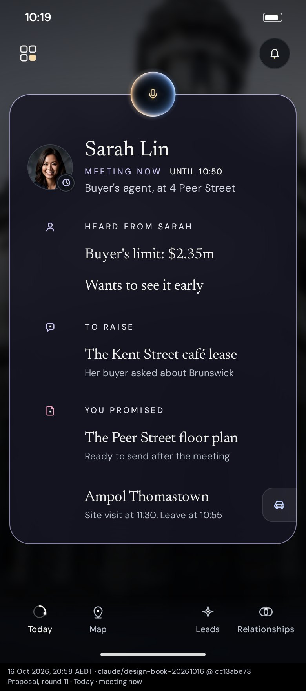
Meeting now, 10:19 amThe orb is listening. What was heard, what to raise, what you promised, and the drive to Ampol.
Today, later
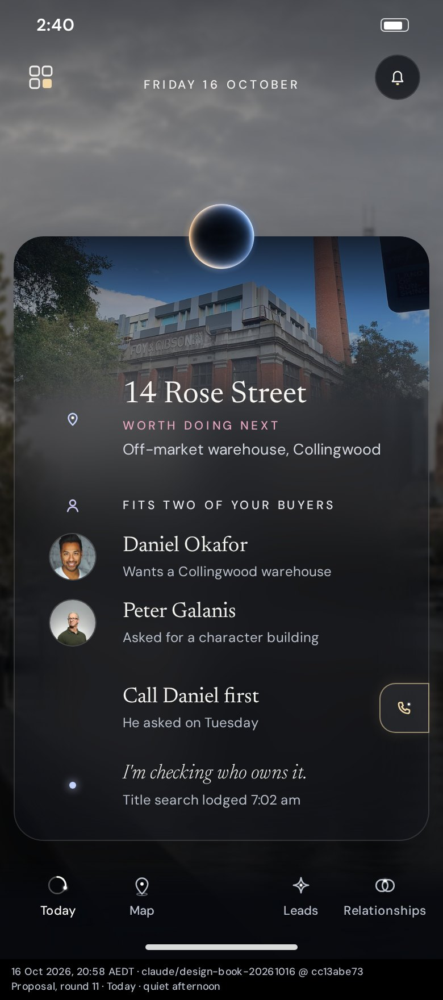
Quiet afternoon, 2:40 pmThe best next move leads: 14 Rose Street, the two buyers it fits, and the call to make first.
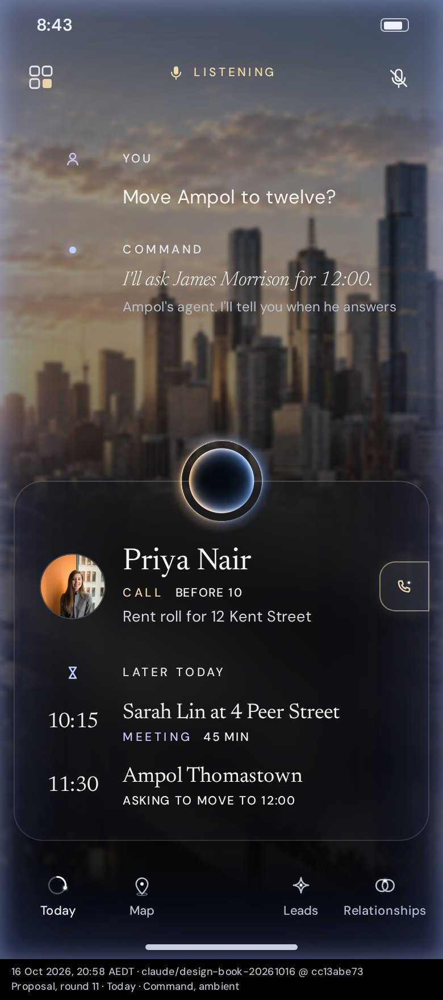
Command, ambientYour words and Command's each labelled; Today stays where it is.
Your week
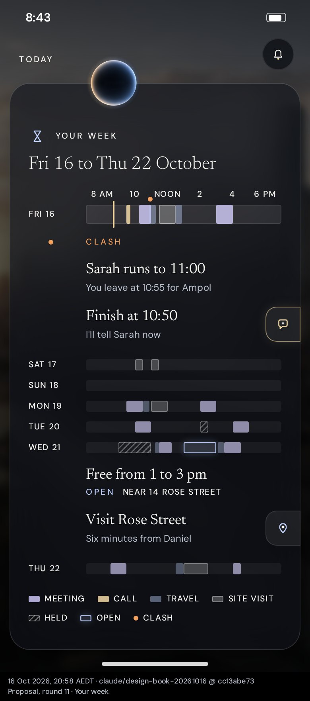
Fri 16 to Thu 22 OctoberReal durations, today strongest; the clash under Friday and the open window under Wednesday, each with its action.
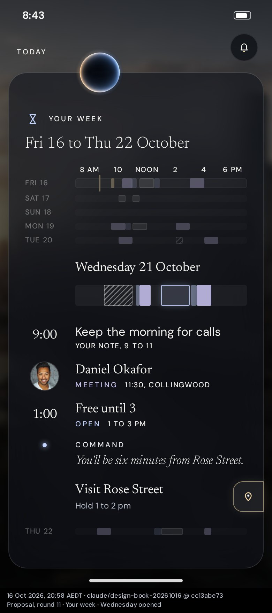
Wednesday openedThe day blooms in place: your note, Daniel, the open window with Command's line, the visit to plan.
Command's work
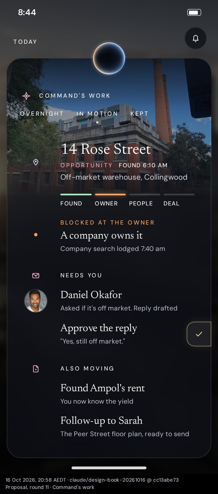
In motionThe lead investigation as the main object: its four stages and where it is blocked. Then what needs you, then what else moved.
Relationships: three directions
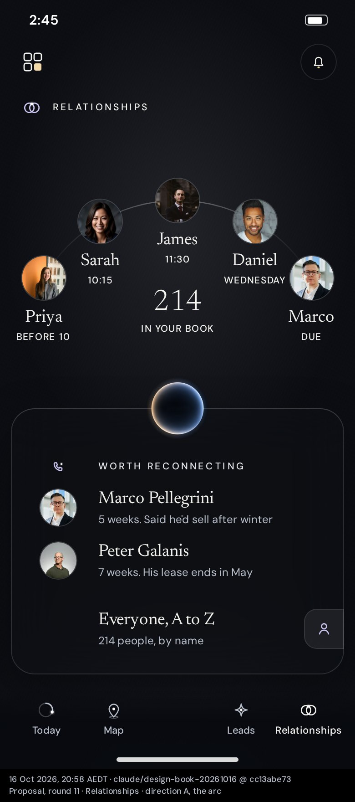
A · the arcThis week's five on the arc, your 214 in its bowl, who is worth reconnecting with and why.
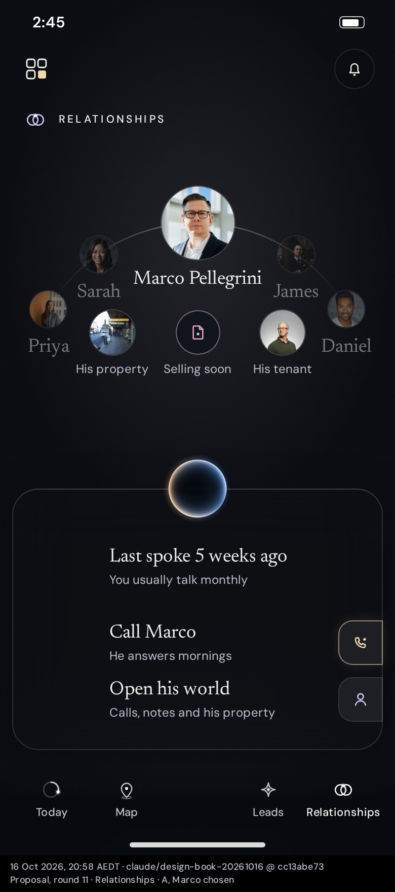
A · Marco chosenHe rises to the top of the arc; his property, a note and his tenant fold out beneath.
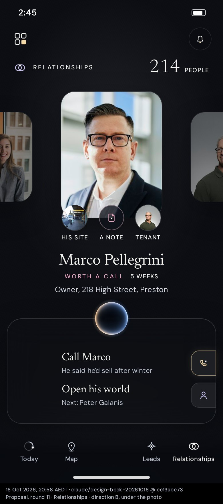
B · under the photoOne portrait at a time, his world sitting under it; swipe for the next.
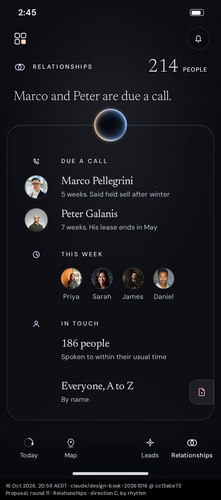
C · by rhythmDue a call, this week, on rhythm; everyone a tap away.
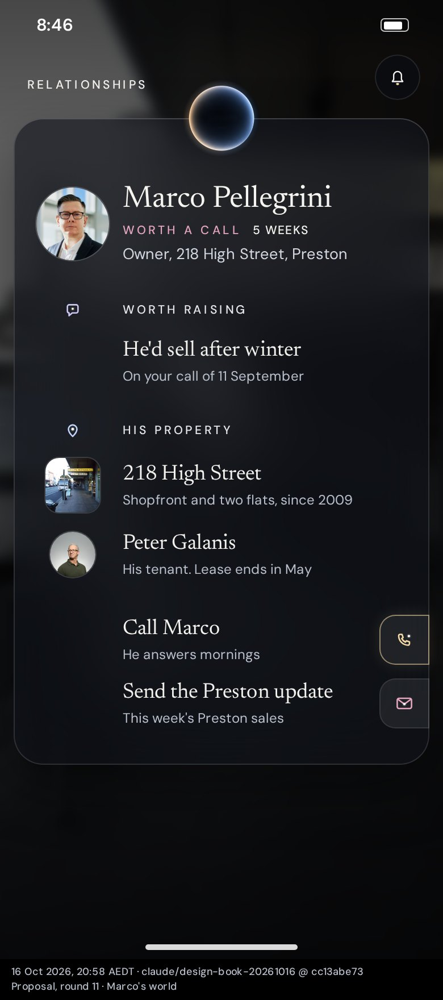
Marco's worldHis page: worth raising, his property and tenant, what passed between you, what to do next.
Motion
Priya comes into focusWhat leaves goes first, the card grows with the orb on its edge, what was prepared rises in.Wednesday opensThe day blooms in place; the rest dim.Marco chosenHe rises to the top of the arc; his world folds out beneath him.
Property stand-ins from Wikimedia Commons: Former Kensington Property Exchange (Sgroey, CC BY-SA 4.0); Foy & Gibson Warehouse, Collingwood (Redtree21, CC0); High Street, Preston (Pjf, CC BY-SA 3.0). Portraits are sample photos (Unsplash). Melbourne photographs as credited in the app.